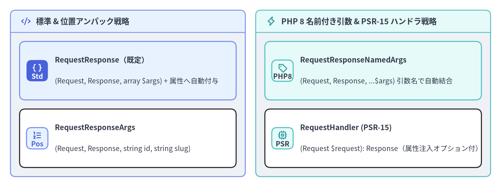
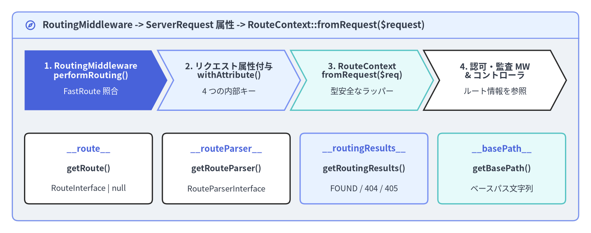

呼び出し戦略（Strategy）と RouteContext
FastRoute が受信した URI と HTTP メソッドに一致する Slim\Routing\Route を特定した後、Slim はコントローラの引数シグネチャを固定せず、プラガブルな Slim\Interfaces\InvocationStrategyInterface 実装へとハンドラ呼び出しを委譲します。また、Slim\Middleware\RoutingMiddleware はルーティング解決時に 4 つの内部属性を PSR-7 ServerRequestInterface に付与し、後続のミドルウェアやコントローラが Slim\Routing\RouteContext を通じて型安全に参照できるようにします。この 2 つの仕組みを理解することで、PHP 8 の名前付き引数や PSR-15 RequestHandlerInterface を活用したクリーンなコントローラ設計と、ルートメタデータに基づく認可・監査ミドルウェアの実装が可能になります。

Source Code
from drawlib.canvas import save, setup
from drawlib.icons import phosphor
from drawlib.smartarts import CardList, Panel
from drawlib.styles import Styles
setup(width=192, height=72, dpi=150)
left_panel = Panel(
"標準 & 位置アンパック戦略",
style=Styles.Neutral.patch(shape_r=2.0),
header_style=Styles.PrimaryNeutral.patch(shape_line_width=1.2),
text_style=Styles.DarkBold.patch(text_size=11.2),
icon=phosphor.code,
icon_style=Styles.PrimaryBold,
header_variant="filled",
header_height=8.5,
)
left_panel.draw((4.0, 4.0), width=90.0, height=64.0)
l_xy, l_w, l_h = left_panel.get_content_box((4.0, 4.0), width=90.0, height=64.0, padding=(3.5, 3.5))
cl_left = CardList(
style=Styles.White,
text_style=Styles.DarkBold.patch(text_size=10.6),
description_style=Styles.Dark.patch(text_size=10.0),
badge_shape="rounded_rect",
badge_style=Styles.PrimaryNeutral,
badge_text_style=Styles.PrimaryBold.patch(text_size=10.0),
icon_style=Styles.PrimaryBold,
direction="vertical",
spacing=3.5,
)
cl_left.add(
"RequestResponse（既定）",
"(Request, Response, array $args) + 属性へ自動付与",
badge_text="Std",
icon=phosphor.brackets_curly,
style=Styles.PrimaryNeutral,
badge_style=Styles.PrimaryFlat,
badge_text_style=Styles.WhiteBold.patch(text_size=10.0),
icon_style=Styles.WhiteBold,
)
cl_left.add(
"RequestResponseArgs",
"(Request, Response, string id, string slug)",
badge_text="Pos",
icon=phosphor.list_numbers,
style=Styles.White,
)
cl_left.draw(xy=l_xy, width=l_w, height=l_h)
right_panel = Panel(
"PHP 8 名前付き引数 & PSR-15 ハンドラ戦略",
style=Styles.Neutral.patch(shape_r=2.0),
header_style=Styles.SecondaryNeutral.patch(shape_line_width=1.2),
text_style=Styles.DarkBold.patch(text_size=11.2),
icon=phosphor.lightning,
icon_style=Styles.SecondaryBold,
header_variant="filled",
header_height=8.5,
)
right_panel.draw((98.0, 4.0), width=90.0, height=64.0)
r_xy, r_w, r_h = right_panel.get_content_box((98.0, 4.0), width=90.0, height=64.0, padding=(3.5, 3.5))
cl_right = CardList(
style=Styles.White,
text_style=Styles.DarkBold.patch(text_size=10.6),
description_style=Styles.Dark.patch(text_size=10.0),
badge_shape="rounded_rect",
badge_style=Styles.SecondaryNeutral,
badge_text_style=Styles.DarkBold.patch(text_size=10.0),
icon_style=Styles.SecondaryBold,
direction="vertical",
spacing=3.5,
)
cl_right.add(
"RequestResponseNamedArgs",
"(Request, Response, ...$args) 引数名で自動結合",
badge_text="PHP8",
icon=phosphor.tag,
style=Styles.SecondaryNeutral,
)
cl_right.add(
"RequestHandler (PSR-15)",
"(Request $request): Response（属性注入オプション付）",
badge_text="PSR",
icon=phosphor.cpu,
style=Styles.White,
)
cl_right.draw(xy=r_xy, width=r_w, height=r_h)
save()
組み込みの呼び出し戦略（InvocationStrategyInterface）
Slim には Slim\Handlers\Strategies\ 名前空間に 4 つの組み込み呼び出し戦略が用意されています。$app->getRouteCollector()->setDefaultInvocationStrategy(...) でアプリケーション全体の既定戦略を変更できるほか、$route->setInvocationStrategy(...) で特定のルートのみ個別の戦略へ切り替えることも可能です。
戦略クラス（Slim\Handlers\Strategies\*） |
ハンドラの引数シグネチャ | ルート引数（$routeArguments）の引き渡し方法 |
|---|---|---|
RequestResponse (既定) |
fn(Request $req, Response $res, array $args): Response |
各 $k => $v を $req->withAttribute($k, $v) で属性へ注入し、さらに第 3 引数 $args 連想配列として渡す |
RequestResponseArgs |
fn(Request $req, Response $res, string $id, ...): Response |
...array_values($routeArguments) により URI 出現順の位置引数として展開して渡す |
RequestResponseNamedArgs |
fn(Request $req, Response $res, string $slug, string $id): Response |
PHP 8 の名前付き引数展開 ...$routeArguments によりパラメータ名で照合して渡す（順序非依存） |
RequestHandler |
fn(Request $req): Response |
$req のみを渡す（コンストラクタに true を渡すと $routeArguments をリクエスト属性へ注入） |
[!TIP]
Route::handle()における PSR-15RequestHandlerInterfaceの自動検出: 既定の呼び出し戦略がRequestResponseのままであっても、Slim\Routing\Route::handle()はコンテナからルート Callable を解決した直後にif ($callable instanceof RequestHandlerInterface)を判定します。そのため、コントローラがPsr\Http\Server\RequestHandlerInterfaceを実装している場合は自動的に$callable->handle($request)が直接呼び出されます。このとき{id}などのルート引数を$request->getAttribute('id')で取得したい場合は、既定戦略にnew RequestHandler(appendRouteArgumentsToRequestAttributes: true)を設定してください。
<?php
declare(strict_types=1);
use Psr\Http\Message\ResponseInterface as Response;
use Psr\Http\Message\ServerRequestInterface as Request;
use Slim\Factory\AppFactory;
use Slim\Handlers\Strategies\RequestHandler;
use Slim\Handlers\Strategies\RequestResponseArgs;
use Slim\Handlers\Strategies\RequestResponseNamedArgs;
$app = AppFactory::create();
$routeCollector = $app->getRouteCollector();
// パターン A: アプリ全体の既定戦略として PHP 8 名前付き引数アンパックを採用
$routeCollector->setDefaultInvocationStrategy(new RequestResponseNamedArgs());
// メソッド引数の順序（$slug, $year）が URL パターン（{year}/{slug}）と異なっていても正確に結合される
$app->get(
'/posts/{year:[0-9]{4}}/{slug:[a-z0-9-]+}',
function (Request $request, Response $response, string $slug, string $year): Response {
$payload = json_encode(['year' => (int) $year, 'slug' => $slug], JSON_THROW_ON_ERROR);
$response->getBody()->write($payload);
return $response->withHeader('Content-Type', 'application/json');
}
);
// パターン B: 特定ルートのみ位置アンパック戦略（RequestResponseArgs）を個別適用
$app->get(
'/orgs/{orgId}/members/{memberId}',
function (Request $request, Response $response, string $orgId, string $memberId): Response {
$payload = json_encode(['org' => $orgId, 'member' => $memberId], JSON_THROW_ON_ERROR);
$response->getBody()->write($payload);
return $response->withHeader('Content-Type', 'application/json');
}
)->setInvocationStrategy(new RequestResponseArgs());
// パターン C: PSR-15 RequestHandler 互換シグネチャ + ルート引数のリクエスト属性注入
$app->get('/items/{id:[0-9]+}', function (Request $request): Response {
$id = (int) $request->getAttribute('id');
$response = new \Slim\Psr7\Response();
$response->getBody()->write(json_encode(['item_id' => $id], JSON_THROW_ON_ERROR));
return $response->withHeader('Content-Type', 'application/json');
})->setInvocationStrategy(new RequestHandler(appendRouteArgumentsToRequestAttributes: true));
カスタム InvocationStrategy の実装
コントローラから連想配列や JsonSerializable なレスポンス DTO を返却した際に、自動的に JSON 文字列へシリアライズして PSR-7 ResponseInterface に書き込むような独自規約を導入したい場合は、Slim\Interfaces\InvocationStrategyInterface を実装します。
<?php
declare(strict_types=1);
namespace App\Routing;
use JsonSerializable;
use Psr\Http\Message\ResponseInterface;
use Psr\Http\Message\ServerRequestInterface;
use Slim\Interfaces\InvocationStrategyInterface;
final class JsonAutoSerializeStrategy implements InvocationStrategyInterface
{
/**
* @param array<string, string> $routeArguments
*/
public function __invoke(
callable $callable,
ServerRequestInterface $request,
ResponseInterface $response,
array $routeArguments
): ResponseInterface {
foreach ($routeArguments as $key => $value) {
$request = $request->withAttribute($key, $value);
}
$result = $callable($request, $response, $routeArguments);
if ($result instanceof ResponseInterface) {
return $result;
}
if (is_array($result) || $result instanceof JsonSerializable) {
$json = json_encode($result, JSON_THROW_ON_ERROR | JSON_UNESCAPED_SLASHES);
$response->getBody()->write($json);
return $response->withHeader('Content-Type', 'application/json');
}
return $response;
}
}
ミドルウェア内での RouteContext の参照と RoutingMiddleware の順序
Slim 4 では、ルーティング解決処理が RouteRunner から独立した Slim\Middleware\RoutingMiddleware へと分離されています。RoutingMiddleware::performRouting() が実行されると、FastRoute のディスパッチ結果と関連オブジェクトが ServerRequestInterface の 4 つの内部属性に書き込まれ、後続のミドルウェアやコントローラから RouteContext::fromRequest($request) で安全に取得できるようになります。

Source Code
from drawlib.canvas import save, setup
from drawlib.icons import phosphor
from drawlib.shapes import rectangle
from drawlib.smartarts import ChevronProcess, Panel
from drawlib.styles import Styles
from drawlib.text import text
setup(width=192, height=76, dpi=150)
outer = Panel(
"RoutingMiddleware -> ServerRequest 属性 -> RouteContext::fromRequest($request)",
style=Styles.Neutral.patch(shape_r=2.0),
header_style=Styles.PrimaryNeutral.patch(shape_line_width=1.2),
text_style=Styles.DarkBold.patch(text_size=11.5),
icon=phosphor.compass,
icon_style=Styles.PrimaryBold,
header_variant="filled",
header_height=8.5,
)
outer.draw((4.0, 4.0), width=184.0, height=68.0)
proc = ChevronProcess(
style=Styles.White,
text_style=Styles.DarkBold.patch(text_size=10.4),
description_style=Styles.Dark.patch(text_size=9.8),
corner_angle=62.0,
spacing=2.0,
flat_left_end=True,
)
proc.add(
"1. RoutingMiddleware\nperformRouting()",
description="FastRoute 照合",
style=Styles.PrimaryFlat,
text_style=Styles.WhiteBold.patch(text_size=10.4),
description_style=Styles.White.patch(text_size=9.8),
)
proc.add(
"2. リクエスト属性付与\nwithAttribute()",
description="4 つの内部キー",
style=Styles.PrimaryNeutral,
)
proc.add(
"3. RouteContext\nfromRequest($req)",
description="型安全なラッパー",
style=Styles.SecondaryNeutral,
)
proc.add(
"4. 認可・監査 MW\n& コントローラ",
description="ルート情報を参照",
style=Styles.White,
)
proc.draw(xy=(8.0, 40.0), width=176.0, height=19.5)
cards = [
(28.75, Styles.White, "__route__", "getRoute()", "RouteInterface | null"),
(73.50, Styles.White, "__routeParser__", "getRouteParser()", "RouteParserInterface"),
(118.25, Styles.PrimaryNeutral, "__routingResults__", "getRoutingResults()", "FOUND / 404 / 405"),
(163.00, Styles.SecondaryNeutral, "__basePath__", "getBasePath()", "ベースパス文字列"),
]
for cx, c_style, attr_key, method_name, ret_desc in cards:
rectangle((cx, 21.0), width=41.5, height=23.0, style=c_style.patch(shape_r=1.5))
text((cx, 27.5), attr_key, style=Styles.PrimaryBold.patch(text_size=10.6))
text((cx, 21.0), method_name, style=Styles.DarkBold.patch(text_size=10.2))
text((cx, 14.5), ret_desc, style=Styles.Dark.patch(text_size=9.8))
save()
RouteContext 定数 |
リクエスト属性キー | RouteContext の取得メソッド |
戻り値の型と保証 |
|---|---|---|---|
RouteContext::ROUTE |
'__route__' |
getRoute(): ?RouteInterface |
マッチした RouteInterface（NOT_FOUND や METHOD_NOT_ALLOWED の場合は null） |
RouteContext::ROUTE_PARSER |
'__routeParser__' |
getRouteParser(): RouteParserInterface |
常に非 null。urlFor() / relativeUrlFor() / fullUrlFor() を提供 |
RouteContext::ROUTING_RESULTS |
'__routingResults__' |
getRoutingResults(): RoutingResults |
常に非 null。getRouteStatus()、getRouteArguments()、getAllowedMethods() を提供 |
RouteContext::BASE_PATH |
'__basePath__' |
getBasePath(): string |
常に非 null。$app->getBasePath() の設定値（既定は ''） |
[!WARNING]
RoutingMiddlewareの実行順序に関する重要な注意点: カスタムミドルウェアがRoutingMiddlewareより前（外側）でRouteContext::fromRequest($request)を呼び出すと、まだ属性が付与されていないためRuntimeException（Cannot create RouteContext before routing has been completed）がスローされます。$app->add()は LIFO（後入れ先出し） で登録されるため、アプリ全体のミドルウェアでRouteContextを参照したい場合は$app->addRoutingMiddleware()より前（コード上の行として上側）に登録するか、あるいはRouteRunnerの内部で実行されるRouteGroup/Routeミドルウェアとして登録してください。
<?php
declare(strict_types=1);
namespace App\Middleware;
use Psr\Http\Message\ResponseInterface as Response;
use Psr\Http\Message\ServerRequestInterface as Request;
use Psr\Http\Server\MiddlewareInterface;
use Psr\Http\Server\RequestHandlerInterface as RequestHandler;
use Slim\Exception\HttpForbiddenException;
use Slim\Routing\RouteContext;
final class RoutePermissionGuardMiddleware implements MiddlewareInterface
{
public function process(Request $request, RequestHandler $handler): Response
{
$routeContext = RouteContext::fromRequest($request);
$route = $routeContext->getRoute();
// マッチしなかったリクエスト（404 等）で実行された場合に備えて null チェックを行う
if ($route === null) {
return $handler->handle($request);
}
$routeName = $route->getName() ?? 'unnamed';
$targetUserId = $route->getArgument('id');
$actorRole = (string) $request->getAttribute('auth_role', 'guest');
if (str_starts_with($routeName, 'admin.') && $actorRole !== 'admin') {
throw new HttpForbiddenException(
$request,
sprintf('Role "%s" is not permitted to access route "%s" (id=%s).', $actorRole, $routeName, (string) $targetUserId)
);
}
return $handler->handle($request);
}
}
サブディレクトリ環境での運用と setBasePath()
リバースプロキシのパス転送や共有ホスティング環境などで、ドメインルート（/）ではなくサブディレクトリ（例：https://example.com/myapp/api/v1/users）配下に Slim アプリケーションを配置する場合は、初期化時に $app->setBasePath('/myapp') を設定します。
- ルート定義へのハードコード不要: 各ルートは引き続き
/api/v1/usersのようにルート相対で記述します。RoutingMiddlewareがリクエスト URI からbasePathを自動的に取り除いた上で FastRoute へ渡します。 urlFor()への自動付与:RouteParser::urlFor()およびRouteParser::fullUrlFor()は設定されたbasePathを自動的に先頭へ付与するため、リダイレクト先やリンク生成も/myapp/api/v1/usersとして一貫して出力されます。
<?php
declare(strict_types=1);
use Slim\Factory\AppFactory;
$app = AppFactory::create();
// FastRoute 照合時に "/myapp" を除去し、RouteParser::urlFor() 生成時に自動付与する
$app->setBasePath('/myapp');
$app->addRoutingMiddleware();
$app->addErrorMiddleware(true, true, true);
// ルート定義側に "/myapp" を書かずに GET https://example.com/myapp/status にマッチ
$app->get('/status', static function ($request, $response) {
$basePath = \Slim\Routing\RouteContext::fromRequest($request)->getBasePath();
$response->getBody()->write(json_encode(['base_path' => $basePath], JSON_THROW_ON_ERROR));
return $response->withHeader('Content-Type', 'application/json');
});
続いて 第 4 章：PSR-7 リクエスト・レスポンス・ストリーム に進み、PSR-7 の不変性（Immutability）、BodyParsingMiddleware、大容量ファイルストリーム、および ResponseEmitter の仕組みを学びましょう。また、InvocationStrategyInterface や RouteContext の詳細なクラス仕様については Slim 4 API リファレンス および Slim 4 内部アーキテクチャ解説 も併せてご活用ください。